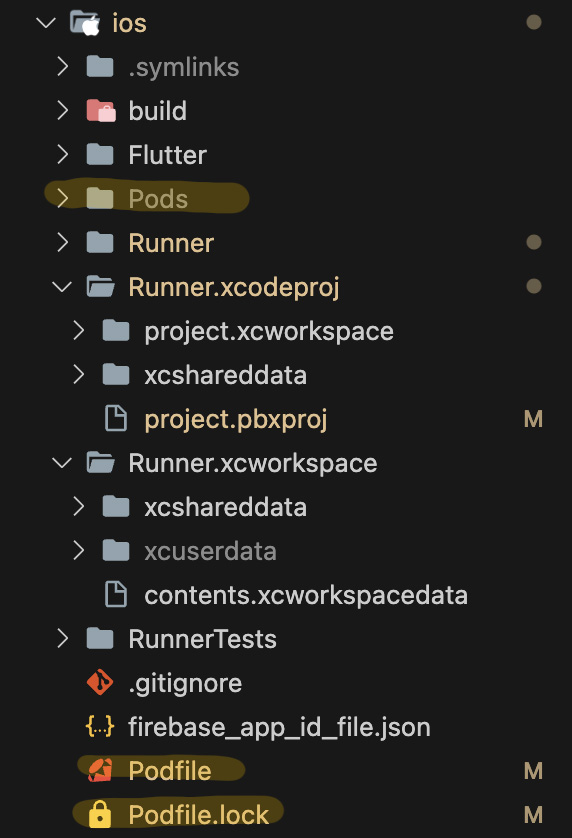
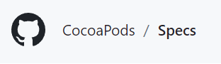

Are you a Flutter dev? Do you code mostly on Windows or Linux? And do you still intend to release your stuff on iOS using a Mac as a secondary device? Odds are you've run into issues with a little something called CocoaPods. In this
blog, I'll give you a fix-all solution for when you hop over to your Mac, and if you're not in a hurry, you can stick around and learn how to dominate Tim Cook's latest hunka junk.
"Think different Mark, THINK DIFFERENT!"
Pro tip: Play "Karma Police" by Radiohead as you fail to compile for iOS. It's more dramatic.
CocoaPods Errors
We're fixing a few problems with CocoaPods with the steps below. The most common of which is "Error running pod install". But errors with pods can also come in a variety of other forms. For example,
the pesky little error that got me to REALLY master these commands for the blog was spec repo not up to date. And running pod repo update was just spawning other
errors. If the word 'pod' appears prominently in your error, odds are you're dealing with CocoaPods.
Solution
Here's a sequence of terminal commands that you can run in VS Code in order to fully reset the pods for your project when you hop on over from your main rig to your Mac. This is assuming your flutter doctor command gives
you all green checks and you already have CocoaPods installed.
cd ios
rm Podfile
rm Podfile.lock
flutter clean
flutter pub get
pod repo update
pod install
If you get an error telling you RunnerTests was not found, a quick fix is to comment out these lines in your Podfile (not Podfile.lock) and then run pod install again:
# target 'RunnerTests' do
# inherit! :search_paths
# end
Finally, go back to your home directory, open up an emulator and run your app using the commands below:
cd ../
open -a Simulator.app
# Make sure VS Code has the simulator selected as your device inbetween these steps
flutter run
And there you have it. Solved!
Why it works
Now let's talk about the Pods. Can we talk about the Pods please, Mac?
I have spent an absurd amount of time just trying to get my app to compile for iOS when it works juuuust fine on Android. That's in great part due to 'CocoaPods'. In part, it's my fault for over-relying on the good folks at Stack Overflow. No
solution they provided would work, which led me to dig deep into CocoaPods this past weekend, and learn about them. The outcome is I understand the meaning of errors, I learned what my problem was, and come up with a solution. The more you know about a
technology, the better you'll be at solving problems for it.
My setup is a desktop PC running Windows 10, along with a Macbook Air M2 as a secondary. I use GitHub to keep my work consistent accross both computers. Similar issues to mine will happen when having a Linux as a primary.
What is CocoaPods?
CocoaPods is a dependency manager exclusive to MacOS. Basically, it's like pub get but for iOS. Pub gets the dependencies for your Flutter project, but CocoaPods is gonna make sure they're on iOS. Each dependency is called a 'Pod'. It's built
using Ruby, which is why when you install it, you use the 'gem' keyword.
The Files and Commands sections of this article are basically my notes and deductions from watching the video below. Feel free to watch it, and then skip those. Or you can just read if you want to know how they're connected to Flutter.
Files and Directories

/Pods - Contains local info for pods, along with subdirectories and pod specs. You usually want to keep this in your git ignore. Created in a Flutter project when you run Flutter pub add <PACKAGE_NAME>
Podfile - Describes the dependencies of the targets of one or more Xcode projects. Make sure this file is included in source control. In Flutter, this file is generated in your iOS directory when installing a package which has a
pod (flutter pub add <DEPENDENCY_NAME>). Also created when running flutter pub get.
Podfile.lock - Note the '.lock', as this file is different from the one just called 'Podfile'. Pretty dumb naming if you ask me, but that's the way they went with. A registry of the pods should have installed for the project along
with their version. This should always be pushed to source control. That way, pods can be consistent for different developers, or across different machines. Checksum - A hash made from all your dependencies. This String is thrown at the bottom of Podfile.lock and compared to one in Manifest.lock.
Manifest.lock - Found in /Pods directory. A copy of Podfile.lock. generated when you run the command pod install. What's the point of this? Well, pods aren't usually pushed to version control, so Manifest.lock ensures that pods
match the lock file before running. Otherwise, the build will fail.
Commands
pod install - A command to install pods (duh). To be used every time we edit our podfile to add, update, or remove a pod. Does the following on run:
Downloads and installs new pods
Writes the installed version in Podfile.lock
The command only resolves dependencies for pods NOT already listed in Podfile.lock, which is why a bunch of blogs will tell you to delete Podfile.lock and then run pod install. If the pod is already listed in .lock file, the command downloads the
version listed in .lock without trying to check if a newer version is available. Else, it searches for the version that matches what is described in the Podfile (NOT Podfile.lock). If there is no version mentioned there, the latest version is downloaded,
installed, and registered in Podfile.lock.
pod outdated - Lists pods that have a newer version available, but does NOT update the pods to their newer version.
pod update <PODNAME> - Updates a specific pod, or all pods if you don't specify a pod name. Works as long as the new version matches the restrictions. When you run the command, the command will print out what pods need
an update, and then prompt asking if you want to go through with it. Pod names will be highlighted in three colors, each meaning something different will happen to each of them:
Red - Pod will not be updated due to Podfile restrictions.
Green - Pod will be updated to the latest version.
Blue - Pod will be updated, but not to the latest version because of Podfile restrictions.
Keep in mind you can't update a pod past what's on the spec repo. And don't worry, you didn't skip anything. I'll be talking about the spec repo in a bit.
pod repo update <REPO_NAME> - Updates the local clone of the spec-repo <REPO_NAME>. If you don't specify a name, the command updates all local spec repos. And don't worry, that doesn't sound like English to
me, either. I'll tell you more about this in a bit.
Pods on Pods on Pods...
...on pods on pods on pods on pods...
This is part of what makes pods slightly tricky. Pods themselves can depend on other pods. Say Pod A relies on Pod B. Now, let's say the people who maintain Pod B put out an update. That update might not be compatible with Pod A. So maybe the
latest version of Pod B is incompatible. That's why Podfile.lock is important. In .lock, we specify exactly what versions to use and keep them consistent. This is also where spec repos come into play.
What is a Spec?
Before we jump into spec repos, we have to know what exactly specs are. 'Specs' is short for specifications, and specifications describe traits for pod versions. A spec file is in json format, and contains traits for a version of a pod, most
importantly, a source where you can download the pod, a source file subdirectory, and dependencies. It's also got some other traits, like a name, a version, a summary, a description a license... You can look at them yourself when I tell you about
spec repos.
What's the importance of these? Well, the folder where these specs are kept is where your pod commands often look in order to throw errors, find incompatibilities, and generally mess your day up. That's why a lot of posts on Stack Overflow will
tell you that your problems will be fixed by running pod repo update. It will update the specs for your pods, and hopefully tell the command line "hey, it turns out these two pod versions are ACTUALLY compatible". And sometimes it works.
Sometimes.
What is a Spec Repo?

Long story short, it's where the specs for your pods are stored. That's it, that's all you need to know about these.
Buuuuuut, if you've got time and want to know how this works... There's a CocoaPods Github repo called Specs. If you snoop around the repo, you'll find that there are 34,941
contributors. Lots of them, right? That's because every spec for every repo is stored here. Open up the Github page on your browser, click on the 'Specs' folder, and follow along with me.
A spec repo is not a part of your iOS project, OR Flutter project, which means your specs show options for every pod on every project on your machine. Spec repos are located in /Users/<YOUR USERNAME>/.cocoapods/repos. If you can't find
Users/<YOUR USERNAME>/, that's because it's your home folder. Or at least is is on my M2 Air. You can verify by going to Users and Groups in the settings app, then ctrl+clicking on your user profile, clicking advanced options, and checking what
your home directory is set to. once you get to the repos directory, you'll probably see a directory called 'trunk', although word has it the folder can have another name. If you go inside 'trunk', you'll notice a folder called 'Specs'. Where else did
we see this? Right! On the Github page. What you'll notice is that every path that you can take inside your local Specs folder is a path you can replicate on the Github repo. It doesn't work the other way around though. You can't go down every path in
the Github repo on your local machine. Unless you're a psycho who has every single pod for some reason. But I'll assume that you're not.
At some point when installing a pod, the specs for your pod are cloned from the repo and onto your machine. However, they might get updated on the repo as updates roll in for other dependencies, and as things change. When running pod repo update,
you'll be cloning from that Github repo.
Source Control Tip
When pulling from source control, if your Podfile or Podfile.lock has changed, run pod install. That will keep your pods consistent with your team's.
What about the Non-Mac Flutter Dev?
POV: An Apple fan kindly explains why his machine is better than yours.
Well, all GitHub queries were leading me to no success, and what I failed to notice sooner is that was all due to my setup. I do most of my work outside of my Mac, and that's something I never realized was important until I dove into the details
of CocoaPods.
Those of you with a similar workflow, run a little test with me, will you? This is the 'Science' part of 'Computer Science'.
Get on your main (Non-Mac) rig, and create a new Flutter project.
Open it up in Visual Studio (or whatever IDE)
On the IDE's file explorer, expand the iOS folder to see its contents.
Now, try flutter pub add image_cropper. FYI I'm using this dependency because I know it's supposed to throw in a pod.
After you run the command, you'll notice that the ios directory remains unchanged. Lame, right? Well, go repeat the same experiment on your Mac. What happens in the iOS folder?
Yeah! Podfile is created... Now run the app on your different machines! You'll notice on your Mac, your iOS folder will now have a Pods subdirectory, as well as a Podfile.lock file. And on your Windows/Linux, it will remain unchanged.
What in the Steve Jobs is going on?
To my knowledge, neither Windows nor Linux will run any sort of Pod commands. And THAT'S the catch with this workflow. Whenever Flutter is supposed to trigger Pod commands on your machine, it will only do it on a Mac. So every time you
install dependencies while on Non-Mac, all the pod work will be ignored, potentially causing massive headaches when you swap over to compile for iOS, or whatever else it is you're building apps for on that sleek piece of two-year-lifespanned
metal.
Why the steps above fix the problem
The article which made it the closest to my solution told me to use pod deintegrate and then pod init. The first command does a few things, but most importantly it deletes the Podfile. The
second generates one. But the problem is that the new Podfile is not set up for my Flutter project, and does not point at my targets. So running install after these commands just creates different errors.
GOAL: To reset pods without losing the configuration specific to my Flutter project.
# First, we move into ios directory
cd ios
# To get rid of Podfile and Podfile.lock
rm Podfile
rm Podfile.lock
# Clean all Flutter dependencies so you can pub get them
flutter clean
# In this next command, Pod stuff will be set up for all your Flutter packages.
flutter pub get
# Now that CocoaPods knows what dependencies we're using, we want to update our
# spec repo specifically for those dependencies.
pod repo update
# Finally, with our Pods reset, but still set up for our project,
# we run install.
pod install
If you're working on an old Flutter project, you might get an error saying cannot find target RunnerTests, or something like that. I'm paraphrasing. If you get this issue, an easy fix is to
comment out these lines in your Podfile:
# target 'RunnerTests' do
# inherit! :search_paths
# end
The thing is that these lines are adding an extra target onto your project, which older versions of Flutter did not create. But honestly, this is a quick solution, not a good one, because every time you move over to your Mac, you'll have to
comment out those lines again. The better solution is to actually create a target RunnerTests. Unfortunately, I have not successfully done this. At least not yet. Give me another week and I'll probably have it down.
This should clear a bunch of your problems. I know dealing with Mac was a little frustrating for me, so hopefully, now that I have suffered through this, you don't have to.